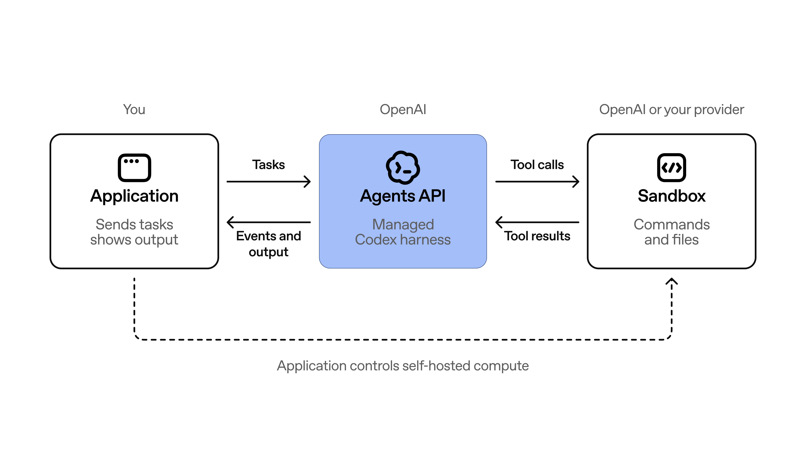
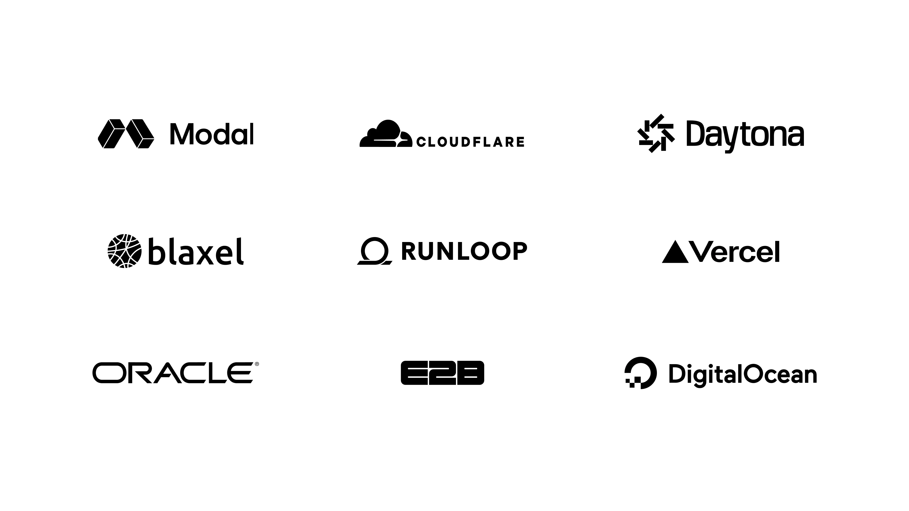

OpenAI今天发布Agents API公共beta，把驱动Codex与ChatGPT for Work的那套harness和基础设施，通过一个简单、灵活的API开放给开发者。
用它可以一次API调用就创建一个生产级agent：指定任务、模型、工具与环境，harness由OpenAI托管并持续演进。上下文压缩、工具搜索、程序化工具调用、子agent并行这些能力都由它负责，开发者只需要专注让agent独一无二的工具、知识与流程。
使用Agents API，只需一次API调用就能创建生产级agent，指定任务、模型、工具和环境。下面是JavaScript版本：
import OpenAI from "openai";
const client = new OpenAI();
const session = await client.beta.agents.sessions.create({
agent: {
model: "gpt-6-astra",
tools: [
{
type: "mcp",
server_label: "observability",
transport: {
type: "http",
server_url: "https://observability.example.com/mcp",
},
},
],
multi_agent: { enabled: true, max_concurrent_subagents: 3 },
},
vault_ids: ["vault_YOUR_VAULT_ID"],
environment: {
type: "openai_hosted",
capability_directories: ["/workspace/capabilities/skills"],
},
input:
"Investigate service-api’s elevated 5xx rate over the last 30 minutes. " +
"Delegate deployment, error, and dependency analysis to subagents. " +
"Save findings, evidence, and recommended mitigation in /workspace/outputs.",
});OpenAI托管并维护harness。你选择agent的计算环境：OpenAI托管的沙箱、你自己的基础设施，或我们的沙箱伙伴之一。Agents API为「在我们优化的agent harness与基础设施之上构建agent」提供了坚实基础，你只需专注在让agent独一无二的那些工具、知识和流程上。

「用了Agents API，我们的评测分数从0.71提升到0.85。API里的子agent支持非常好，大幅加快了我们的工作流。以前在旧架构里观察和编排子agent相当笨拙，新的API让延迟降低了四倍。我们花了很长时间想优化这一点，而子agent流程开箱即用就是巨大的提升。」
Jack Weissenberger，Ciridae CTO
「改造真实业务意味着把AI部署进各种形态的工作流。Agents API提供harness；环境、上下文和用户体验仍然归我们。有了我们的AI平台Nexus，我们如今能在几小时内为不同行业搭起agent，从住宅服务到建筑设计。」
Rasmus Wissmann，Long Lake CTO
「Agents API让我们能以不同的方式思考如何架构复杂的多步工作流。过去我们要写提示词链、自己管理工具调用，现在可以在代码里直接使用agent，就像Codex在你笔记本上工作那样。它已经帮我们解决了好几个原本需要自建agent基础设施才能解决的问题。」
Cole Striler，WithCoverage工程总监
「把案件审核流程迁移到Agents API之后，我们的单案成本下降了60%，延迟更低，token效率显著提升，同时保持了原有表现。」
Bhavyansh Sabharwal，SafetyKit技术团队成员
「测试中最突出的一点，是Agents API处理突发负载的方式非常自然。我们可以把工作分发给数百个agent、异步运行、稍后再收集结果，而在波峰之间不必让基础设施空转。」
Dmitry Khanukov，Dwelly联合创始人兼CTO
「在金融服务里，赢得客户信任至关重要。OpenAI的Agents API让我们能构建更可靠的agent，使客户有信心在生产中使用它们。通过把agent harness与沙箱分离，我们把失败的agent响应减少了86%。」
Serhii Shchoholiev，Hypha首席工程师
「Agents API在一个真实、活跃的代码仓库里完成了实现、独立评审、修复与真实浏览器验证。整体上，agent的工程质量非常强。」
Maks Operlejn，deepsense.ai高级机器学习工程师
「在Nash，我们部署了数千个长时间运行的AI agent，它们管理着全球物流网络中数亿次配送。OpenAI的Agents API为我们提供了所需的持久会话与编排层，让agent能持续在生产中管理上下文、恢复与多步执行；Nash则提供把它们连接到物理世界的工具与执行环境。这让我们的agent能够推理、行动、恢复，并在可能横跨数小时甚至数天的复杂工作流中协作。这些agent是为合作伙伴运行关键物流任务的生产基础设施。」
Aziz Alghunaim，Nash.ai联合创始人兼CTO
不同的工作负载需要不同的计算、存储和部署方式。Agents API让你挑选适合自己应用的沙箱。
我们正在与生态伙伴合作，包括Blaxel、Cloudflare、Daytona、DigitalOcean、E2B、Modal、Oracle、Runloop与Vercel，为一系列需求提供一等集成：
完全托管的运行环境，或部署在你自己的VPC之内。
特定的文件与密钥存储机制。
不同的CPU、GPU与内存配置，对应匹配你公司工作流的性能、冷启动与成本曲线。

对希望快速上手并高效扩展的开发者，我们还推出了OpenAI托管沙箱。它复用了驱动Codex与ChatGPT的同一套沙箱基础设施。
OpenAI负责配置和管理沙箱，为agent提供一个安全、高性能的环境来运行代码、处理文件并产出交付物。这些沙箱可以灵活配置你的文件、软件包、技能与插件，让agent拿到完成任务所需的一切。
要利用新的模型能力，往往意味着重写自己的harness，把宝贵的时间从改进应用上挪走。Agents API随着每一次模型发布提供这些能力的版本化访问。我们与模型一同维护并持续改进harness，让你的agent从每次升级中获得更好的表现。例如，harness近期的改进包括：
为了支持模型连续工作数小时，我们构建了上下文管理，帮助agent在更长的会话里携带相关信息。当会话接近上下文上限时，Agents API会自动压缩较早的上下文，保留agent继续工作所需的信息。开发者可以构建跨越多个上下文窗口的工作流，而不必自己实现压缩逻辑。
Agents API帮助agent找到正确的工具并高效使用它们。工具搜索按需加载相关的工具定义，帮助降低token用量与成本，同时保留模型的缓存。工具可用之后，程序化工具调用让agent能并行发起调用、串联相关操作，并在代码里过滤或合并结果，从而处理大体量数据，同时只把相关结果带回上下文。Agents API支持MCP、自定义函数，以及网页搜索这类内置工具。给agent挂上MCP工具的JSON配置如下：
{
"agent": {
"tools": [
{
"type": "mcp",
"server_label": "openai_docs",
"transport": {
"type": "http",
"server_url": "https://developers.openai.com/mcp"
}
},
]
}
}借助多agent支持，Agents API可以把复杂任务拆成相互独立的部分，交给并行工作的子agent。每个子agent维护自己的上下文，从而专注在自己的任务上；主agent负责协调它们的工作并汇总结果。这能加速适合并行处理的研究、分析与编码任务，而你不需要自己搭编排。开启多agent的JSON配置如下：
{
"agent": {
"model": "gpt-6-astra",
"multi_agent": {
"enabled": true,
"max_concurrent_subagents": 3,
}
}
}Agents API由开源的Codex harness驱动，这让开发者可以看清协调模型调用、工具与上下文的核心逻辑。使用Agents API时，OpenAI负责运行和维护这套harness，而开发者可以检视它的公开代码库并从中学习。
Agents API从今天起对所有开发者开放公共beta。使用Agents API没有额外费用，你只需为agent使用的token与工具付费，具体见定价页面。
查阅Agents API概览可以了解更多，或跟随快速上手指南开始使用，把Codex背后的harness引入你自己的agent。
公共beta期间，我们会根据你的反馈快速迭代，朝着正式可用推进。告诉我们什么做得好、在哪里遇到阻力，以及你在生产环境中构建和运行agent还需要什么。
参考：https://openai.com/index/introducing-the-agents-api/